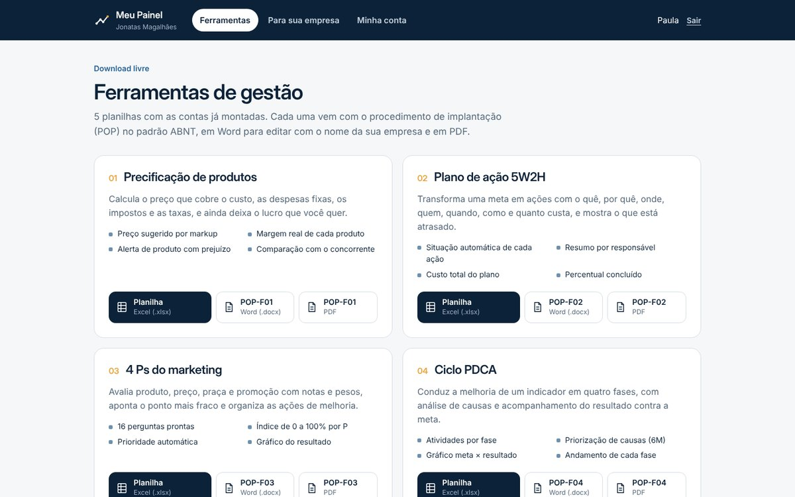
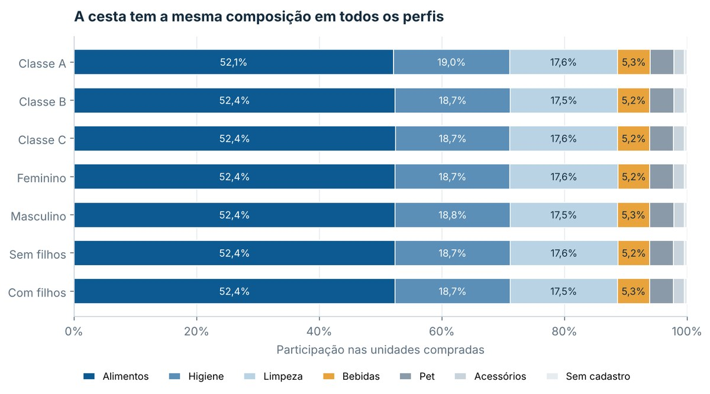

Disponível para atendimento
Gestão organizada, com números que orientam cada decisão.
Sou Jonatas Magalhães, administrador com mais de nove anos gerindo estoque, vendas e equipes. Ajudo pequenas e médias empresas a organizar processos, controlar o estoque e acompanhar indicadores, com Excel, Power BI e procedimentos que a equipe consegue seguir.
Tenho agenda para atender novas empresas que precisam organizar estoque, processos e indicadores, em Joinville e remotamente em qualquer parte do Brasil.
O que mudou onde trabalhei
Escolha um indicador
Clientes e projetos
Empresas e organizações que já contam com o meu trabalho.
Meu Painel
Ferramentas de gestão gratuitas, prontas para usar na sua empresa
Crie sua conta e baixe planilhas com as contas já montadas. Cada uma vem com o procedimento de implantação passo a passo, no padrão ABNT, para a equipe aplicar sem depender de consultor.
- Precificação de produtosPreço que cobre custo, despesas, impostos e lucro, com a margem real de cada item.
- Plano de ação 5W2HMetas viram ações com responsável, prazo e custo, e os atrasos aparecem sozinhos.
- 4 Ps do marketingProduto, preço, praça e promoção avaliados com notas e pesos, com a prioridade apontada.
- Ciclo PDCAMelhoria de um indicador em quatro fases, com análise de causas e meta contra resultado.
- Matriz SWOTForças, fraquezas, oportunidades e ameaças priorizadas, com a postura estratégica sugerida.
Cadastro em 1 minuto. Planilhas em Excel e procedimentos em Word e PDF.

Dentro do painel você também encontra
- Área do cliente com login próprio e os materiais sempre à mão.
- Contato direto pelo WhatsApp para tirar dúvidas sobre as ferramentas.
- O que a consultoria entrega, etapa por etapa, para você decidir com clareza.
Como funciona a consultoria
Para empresas que querem ir além das ferramentas: cada cliente tem um espaço próprio no painel e passa por seis etapas, com os materiais personalizados com o nome da empresa.
- DiagnosticarQuestionário por tipo de empresa e relatório com nota por área, achados e plano recomendado.
- OrganizarProcedimentos padrão (POPs) no padrão ABNT e planilhas de estoque, compras, caixa e vendas.
- MedirDashboards de vendas, estoque e financeiro, no Excel ou no Power BI.
- AutomatizarAlertas de estoque, relatórios automáticos e atendimento por WhatsApp.
- AcompanharReunião mensal, indicadores lançados e avisos quando algo sai do combinado.
- TreinarApostilas, exercícios com os dados da empresa e certificado para a equipe.
Atendo em Joinville e região presencialmente e em todo o Brasil de forma remota.
Agendar uma conversaCaso: vendas e entregas de um marketplace
110 mil itens vendidos na Olist entre 2017 e 2018. Do dado bruto ao painel, com as conclusões que um gestor pode usar.
O problema
Entender onde estava o faturamento, se a logística acompanhava as vendas e o que travava o crescimento fora do Sudeste.
O que fiz
ETL em Python, modelo estrela com duas tabelas fato, sete consultas SQL e um dashboard de três páginas no Power BI.
O que os dados mostraram
- 19% de pedidos atrasados no pico pós-Black Friday
- 12% de atraso no RJ, quase o triplo de SP
- 62,6% da receita em apenas três estados
- Python
- pandas
- SQL
- Power BI
- DAX
Estas são imagens. Para filtrar por estado, mês e categoria, use o dashboard publicado no Power BI.
Caso: o que uma base de varejo realmente diz
830 mil itens de supermercado, 1.000 clientes, de 2019 a 2022. Revisei uma análise feita no curso e testei cada conclusão antes de transformá-la em recomendação.
O problema
Saber se o perfil do cliente (classe, gênero, filhos) muda o que ele compra, para orientar campanhas e o mix de produtos.
O que fiz
Refiz o tratamento, montei um modelo estrela, escrevi oito consultas SQL e rodei 12 testes estatísticos com tamanho de efeito.
O que os dados mostraram
- 11,6% do volume tinha sido apagado como duplicata, mas era venda
- 12 testes estatísticos e nenhuma diferença relevante entre perfis
- 0,90 de correlação entre as vendas do mês e os dias registrados na base
- Python
- SQL
- Estatística
- Power BI

Classe, gênero e filhos não mudam a cesta. A recomendação foi não criar campanha por perfil com esta base e passar a registrar preço, quantidade e todos os dias de venda.
Sobre mim
Mais de nove anos em indústria, varejo, setor público e terceiro setor. Clique em cada cargo para ver o que entreguei.
Competências e onde as usei
- 2027MBA em IA e Business IntelligenceUniFatecie, em andamento
- 2027Especialização em Gestão da Aprendizagem e Inovação Tecnológica na EducaçãoUniFatecie, em andamento
- 2026Bacharelado em AdministraçãoUniFatecie
- 2025Tecnólogo em Processos GerenciaisUniFatecie
Certificações
- Power BI SENAI / IFRS
- SQL SENAI / IFRS
- Python para Análise de Dados SENAI / IFRS
- BI e IA Aplicada aos Negócios UniFatecie
- Administrador de Banco de Dados IFRS
- Logística 4.0 iPED
- NR11 e NR33
Vamos conversar
Quer organizar o estoque, os processos ou os indicadores da sua empresa? Respondo em até um dia útil.
- LinkedIn linkedin.com/in/jonatasmag
Joinville, Santa Catarina. Presencial, híbrido ou remoto, com disponibilidade para viagens.